Diseño y estrategia
Branding, manual de marca, naming, voz y tono.
Branding, manual de marca, naming, voz y tono.

Sitios web, e-commerce, apps y comunicación empresarial interna.

Redes sociales (Instagram, TikTok, Facebook, YouTube), SEO y marketing digital.

Desde el brainstorming hasta la edición profesional.
Analizamos tu marca, redes, web y competencia.
Definimos mensaje, oferta, público y canales.
Guionamos, producimos y editamos contenido de alto valor.
Segmentamos el público y generamos estrategias.
Medimos resultados y optimizamos el proceso.





Queremos conocerte para seguir haciendo lo que nos apasiona: contar buenas historias.
Iniciar mi proyecto